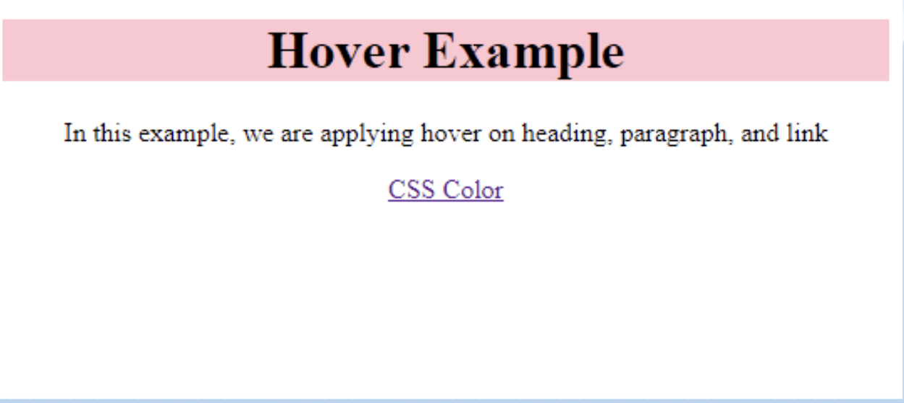
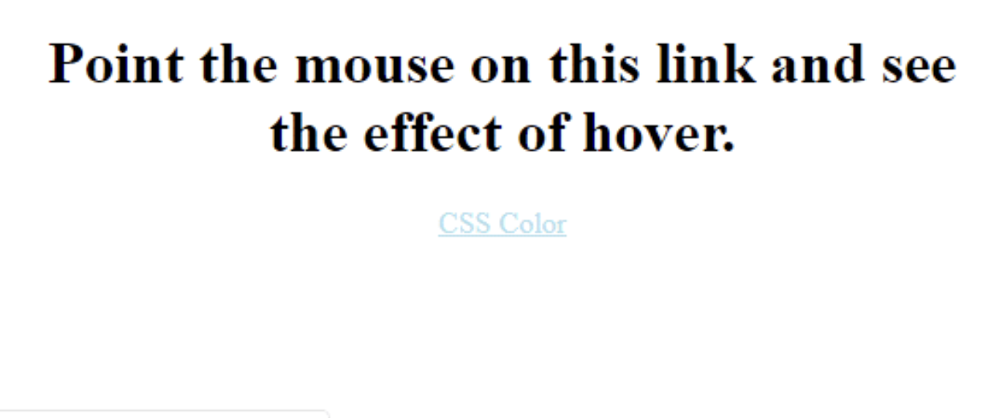
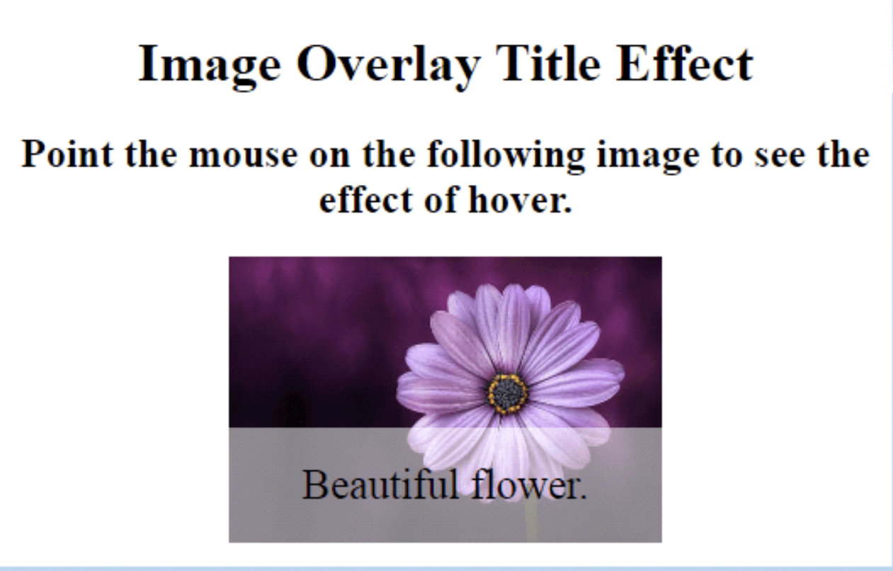

CSS Hover: css :hover is used to select the various elements whenever we point the mouse on these elements.
We can also use this selector on all the HTML elements, instead used only on the links. To design the link for unvisited pages, a :link selector can be used.
To develop the link for visited pages, a :visited selector can be used, and to design the active link, an :active selector can be used efficiently.
CSS hover was introduced in the CSS1 version.
It is applied on web pages to highlight them as per user’s preference within the adequate programs of web-designing.
It contains some of the following effects:
It can be used to change the background color and font.
It can be used to change the image’s opacity.
It can be used for text embedding.
It can be used to design rollover effects on the images.
It can be used to swap the images.
Important: To effectively create the hover selector,
we need to define it after the declaration of :visited and :link selector, if these selectors are available in the definition of the CSS.
The hover changes the property value of elements to enable various animated modifications to the stated text/image or the reciprocal elements.
Embedding of various elements of the hover within the web pages allows them to be functional and interactive.
The hover selectors are compatible with every main browser. Instead, it will be challenging to execute it on several touch devices. It is realized that the active hover operation gets stuck when using with specific non-supportive devices.
Syntax:
:hover {
css declaration;
}
Example 1:Apply hover over heading, link, and paragraph
<!DOCTYPE html>
<html>
<head>
<style>
body {
text-align: center;
}
p:hover, h1:hover, a:hover {
background-color: pink;
}
</style>
</head>
<body>
<h1>Hover Example</h1>
<p>In this example, we are applying hover on heading, paragraph, and link</p>
<a href='https://www.javatpoint.com/css-color'>CSS Color</a>
</body>
</html>
Ouput:

Example 2: Using CSS to change the color of the link on hover
The link color will be altered when we point the cursor over it.
Its execution is easy to understand and write, if we are writing in CSS. A stylish effect will be created.
<style>
body {
text-align:center;
}
a {
color: green;
}
a:hover {
color: lightblue;
}
a:active {
color: cyan;
}
< /style>
</head>
<body>
<h1>Point the mouse on this link and see the effect of hover.</h1>
<a class= "link" href='https://www.javatpoint.com/css-color'>CSS Color </a>
OUTPUT:

Example 3: Text overlay over image hover
This code of CSS shows the text over the image as mouse hover. Let’s look at this overlay image effect as mouse hover.
<style>
body{
text-align:center;
} br
* {box-sizing: border-box;}
.container {
position: relative;
width: 50%;
max-width: 300px;
}
.image {
display: block;
width: 100%;
height: auto;
}
.overlay {
position: absolute;
bottom: 0;
background: rgba(255, 255, 255, 0.5);
width: 100%;
opacity: 0;
transition: .9s ease;
font-size: 25px;
padding: 20px;
}
.container:hover .overlay {
opacity: 1.5;
}
</style>
</head>
<body>
<h1>Image Overlay Title Effect</h1>
<h2>Point the mouse on the following image to see the effect of hover.</h2>
<center>
<div class="container">
<img src="Flower3.png" class="image">
<div class="overlay">Beautiful flower.</div>
</div> </center>
Output:
